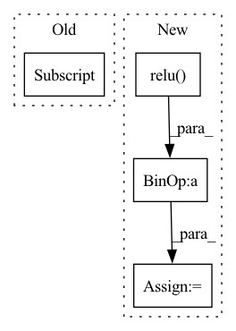

Pattern ID :22657

Before Change
idxs[vals > lam] = -num_softmax
lower_edge = idxs.abs().min(dim=1)[0]/num_softmax
prediction = torch.argmax(output, dim=1)/num_softmax
upper_edge = idxs.max(dim=1)[0]/num_softmax
return lower_edge, prediction, upper_edge
After Change
upper_quantile = (vals > 0.95).float().sum(dim=1)/num_softmax
prediction = torch.argmax(output, dim=1)/num_softmax
lower_edge = prediction - (prediction-lower_quantile).relu()*lam
upper_edge = prediction + (upper_quantile-prediction).relu()*lam
return lower_edge, prediction, upper_edge
In pattern: SUPERPATTERN
Frequency: 4
Non-data size: 4
Instances
Fragment ID: 71510595
Project Name: aangelopoulos/im2im-uq
Commit Name: 4be8696104a7eb21f8877569f08c54472fc12610
Time: 2022-01-23
Author: angelopoulos@berkeley.edu
File Name: core/models/finallayers/softmax_layer.py
M Class Name: AnonimousClass
N Class Name: AnonimousClass
M Method Name: softmax_nested_sets_from_output(3)
N Method Name: softmax_nested_sets_from_output(3)
M Parent Class:
N Parent Class:
M File Name: core/models/finallayers/softmax_layer.py
N File Name: core/models/finallayers/softmax_layer.py
M Start Line: 32
M End Line: 43
N Start Line: 32
N End Line: 46
'>
Before Change
ign = ign.unsqueeze(-1).expand_as(batch_label) // shape: (batch_size, num_priors, num_classes)
batch_label[ign] *= -1
mask = batch_label >= 0
loss_c = self.focal_loss(conf_data[mask], batch_label[mask], reduction="mean")
return (loss_l, loss_c)
After Change
with torch.no_grad():
batch_label = torch.zeros(num * num_priors, num_classes + 1).cuda().scatter_(1, conf_t.view(-1, 1), 1)
batch_label = batch_label[:, 1:].view(num, num_priors, num_classes) // shape: (batch_size, num_priors, num_classes)
score = (overlap_t-3.0).relu().unsqueeze(-1).expand_as(batch_label)
batch_label = batch_label * score
mask = batch_label >= 0
loss_c = self.gfocal_loss(conf_data, batch_label, mask)
return (loss_l, loss_c)
'>
Fragment ID: 71510594
Project Name: zhangheng19931123/mutualguide
Commit Name: 85219f93a8d5b54cb3ed9f06d86bb64d3f6d3552
Time: 2021-10-02
Author: heng.zhang@irisa.fr
File Name: utils/loss/multibox_loss.py
M Class Name: MultiBoxLoss
N Class Name: MultiBoxLoss
M Method Name: forward(4)
N Method Name: forward(4)
M Parent Class: nn.Module
N Parent Class: nn.Module
M File Name: utils/loss/multibox_loss.py
N File Name: utils/loss/multibox_loss.py
M Start Line: 27
M End Line: 102
N Start Line: 39
N End Line: 110
'>
Before Change
[D, V] = torch.linalg.eigh(M)
if order:
posInd1 = torch.nonzero(torch.gt(D, eps))[:, 0]
D = D[posInd1]
V = V[:, posInd1]
M_p = torch.matmul(torch.matmul(V, torch.diag(torch.pow(D, p))), V.t())
return M_p
After Change
def _compute_matrix_power(M, p, eps):
try:
M_smallest_eig = torch.relu(-torch.min(torch.real(torch.linalg.eigvals(M)))) + eps
except:
print()
M = M + M_smallest_eig * torch.eye(M.shape[0], dtype=torch.double, device=M.device).float()
'>
Fragment ID: 71510615
Project Name: jameschapman19/cca_zoo
Commit Name: 10ca4c4ff40d7260284ecaa7b49cbb6b6308ddb7
Time: 2021-06-17
Author: james.chapman.19@ucl.ac.uk
File Name: cca_zoo/deepmodels/objectives.py
M Class Name: AnonimousClass
N Class Name: AnonimousClass
M Method Name: _compute_matrix_power(3)
N Method Name: _compute_matrix_power(4)
M Parent Class:
N Parent Class:
M File Name: cca_zoo/deepmodels/objectives.py
N File Name: cca_zoo/deepmodels/objectives.py
M Start Line: 7
M End Line: 13
N Start Line: 8
N End Line: 14
'>
Before Change
W = self.encoder.src_embedding.get_embedding().T
mask = x.view(-1).eq(self.MASK)
enc_output = enc_output.view(-1, self.d_model)[mask]
logits = torch.matmul(enc_output, W)
outputs = [logits]
After Change
enc_output = enc_outputs[0]
if self.activation == "relu":
enc_output = F.relu(enc_output)
elif self.activation == "gelu":
enc_output = gelu_new(enc_output)
enc_output = self.norm(enc_output)
if self.share_emb_out_proj == False:
W = self.W
else:
W = self.encoder.src_embedding.get_embedding().T
logits = torch.matmul(enc_output, W)
outputs = [logits]
if return_states == True:
outputs = outputs + enc_outputs
if compute_loss == True:
loss = self.loss_fn(outputs, targets)
outputs = [loss] + outputs
return outputs
'>
Fragment ID: 71510602
Project Name: yaoxiaoyuan/mimix
Commit Name: 59b6082bb310a2a17c2ac30225e300124904cc2f
Time: 2022-06-21
Author: sbsbsbsbsb945@gmail.com
File Name: src/models.py
M Class Name: TransformerBiLM
N Class Name: TransformerBiLM
M Method Name: forward(5)
N Method Name: forward(3)
M Parent Class: nn.Module
N Parent Class: nn.Module
M File Name: src/models.py
N File Name: src/models.py
M Start Line: 1165
M End Line: 1179
N Start Line: 1399
N End Line: 1433